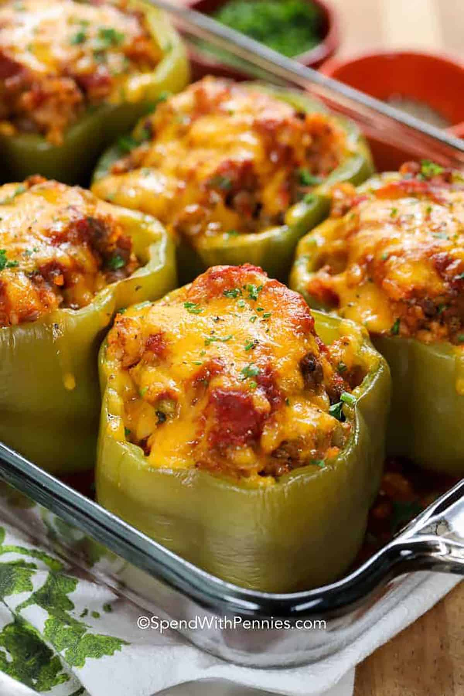

Stuffed Peppers

- 4 bell peppers, any color
- 1 medium onion, yellow, diced
- 3 cloves of garlic, diced
- 1 to 1.5LB ground beef, or turkey
- 2/3's cup jasmine rice, uncooked
- 1 can of fire roasted diced tomatoes, drained
- 1 can of tomato sauce.
- 1 cup shredded cheese
- 1 TBSP extra virgin olive oil
- Garlic powder
- Onion powder
- Ground salt
- Ground Pepper
- Italian seasoning
- Preheat oven to 350 degrees fahrenheit
- Grease baking dish while oven is preheating
- Trim tops of bell peppers and remove internal ribs and seeds
- Heat olive oil in a large non-stick skillet. Medium to high heat
- Meanwhile, dice yellow onion and garlic
- saute onion and garlic until translucent and set aside in pan.
- add in ground beef or turkey, break it up as it browns. add salt, pepper, garlic powder, onion powder
- remove from heat, drain off fat or grease
- stir in tomatoes, uncooked rice, italian seasoning, salt, and pepper to taste
- while having peppers upright fill in beef or turkey mixture, pour over some sauce and sprinkle the shredded cheese. cover lightly with foil and bake for 35minutes
- remove tinfoil and bake for anther 10 minutes or until cheese is browned.
- remove from oven and let the dish rest for 2-3 minutes. serve warm
- Enjoy!!
Home